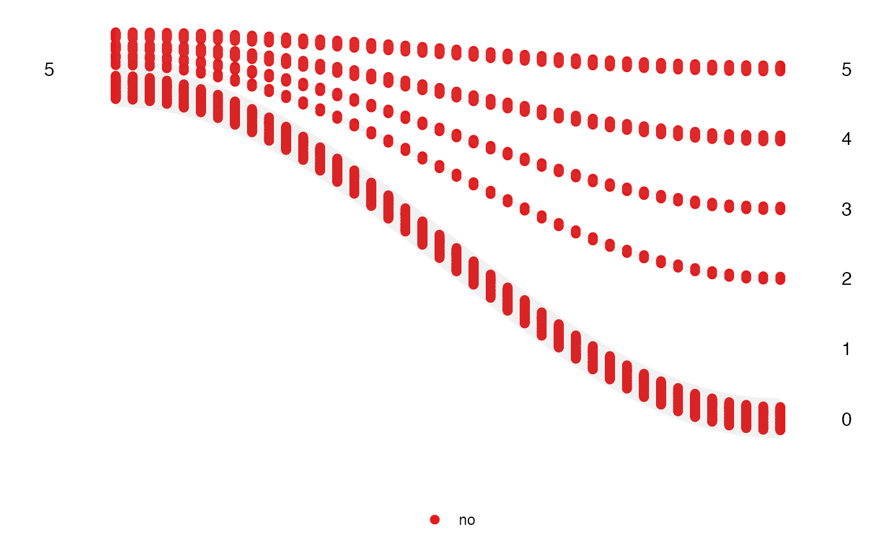

This function takes in the data which has been prepared by the anim_prep()
or anim_prep_cat() and return the ggplot object. The user can still modify
the plot as usual.
Usage
wallaby_plot(
data,
group_palette = NULL,
shade_palette = NULL,
rendering = "gganimate",
time_dependent = FALSE,
subset = "top",
relation = "one_many",
total_point = NULL,
x_lab = NULL,
...
)Arguments
- data
The categorized data.
- group_palette
The vector of the palette used by the function to supply the color of each group.
- shade_palette
The vector of the palette used by the function to supply the color of each shaded area.
- rendering
The choice of method used to create and display the plot, either gganimate or plotly.
- time_dependent
Logical. Should the visualization be time-dependent? The default is FALSE.
- subset
A character string specifying the variable used for subsetting the data. The "top" and "bottom" strings can also be used in this argument.
- relation
The choice of relationship for the values to display on the plot, either "one_many" or "many_one."
- total_point
The number of points the users want for the wallaby plot. The default is NULL, where the number of the point is equal to the original number of points.
- x_lab
The label for the x-axis.
- ...
Additional arguments for customization. See details for more information.
Details
This function takes categorized data and generates a ggplot object. The wallaby plot is the plot that shows the movement of the subset data between the start and end of the observable period. The point position and point size in the shaded area can be controlled using additional arguments such as height, width, and size. For the shading area, the alpha argument can be used.
Examples
animbook <- anim_prep(data = osiris, id = ID, values = sales, time = year, group = japan)
wallaby_plot(animbook)
#> You can now use the animbook::anim_animate() function to
#> transform it into an animated object
